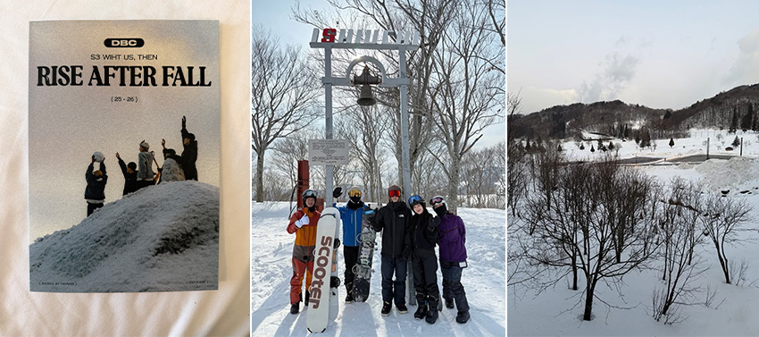
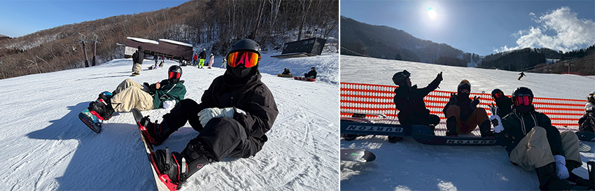
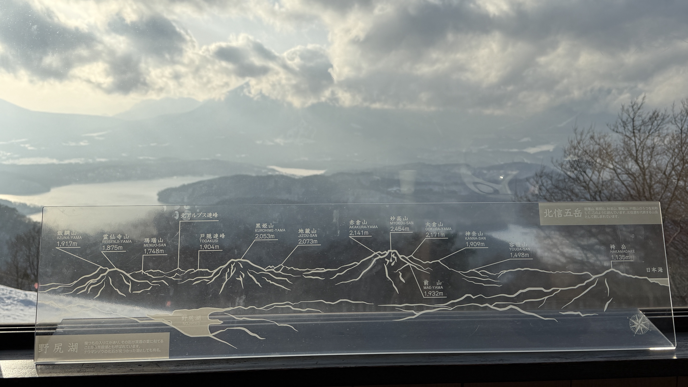
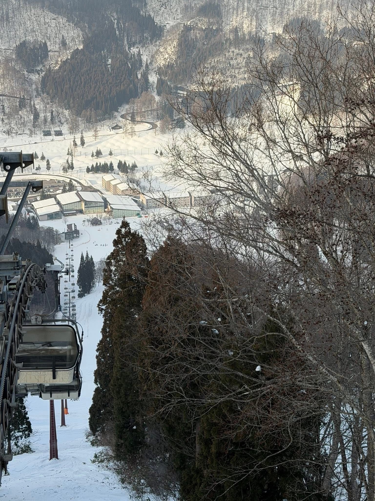
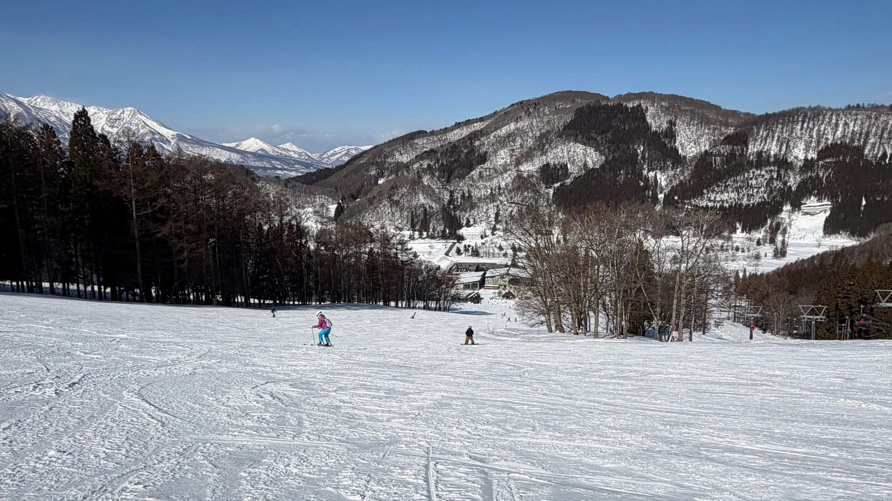
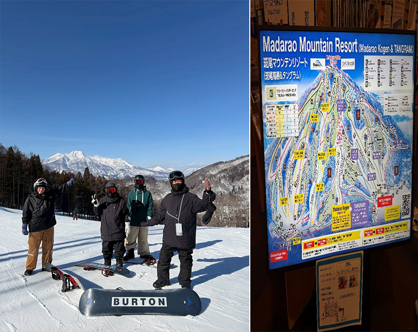
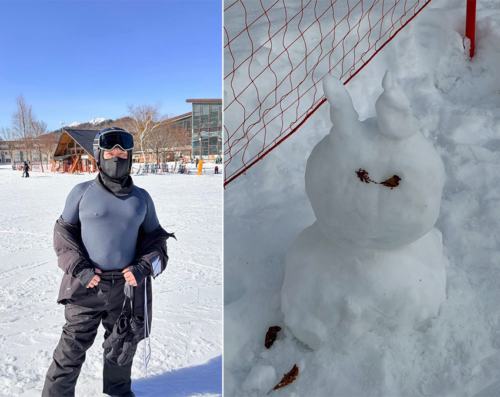
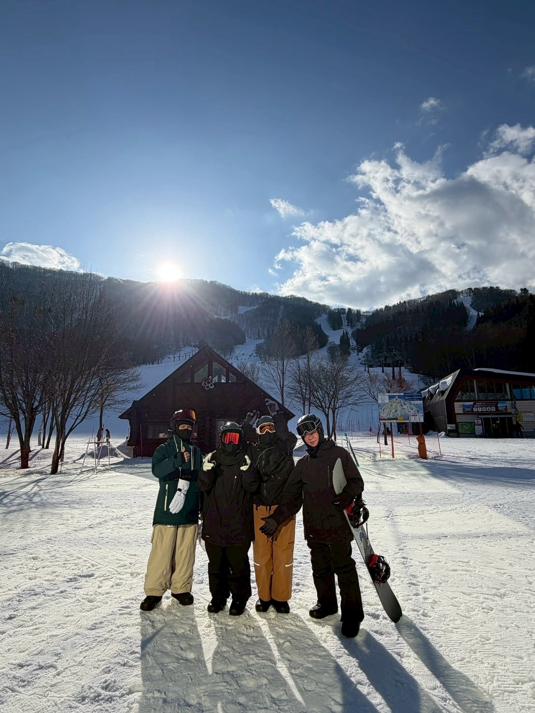

人到中年，生活總是在穩定的軌道上反覆運行，那種「掌控感」有時反倒成了一種乏味。 某個午後，突然熱血沸騰。人到中年應該做點新挑戰，像是考證照、跑馬拉松、登玉山、泳渡日月潭等。然後，不知道哪根筋不對，選了「滑雪」。可能是兒子一句：「你這年紀還能動嗎？」 聽起來太像挑釁了。
……我們出發吧！
 |
Day 1｜跌倒次數比雪花多
抵達班尾高原時，迎接我的是漫天飛舞的粉雪。飯店門口就是雪場，這對體力有限的中年人來說是最大的福音。第一天的任務聽起來很卑微—學會「走路」與「跌倒」。穿上沉重的雪鞋，那種腳踝被鎖死的僵硬感，瞬間讓我像隻剛上岸的企鵝。教練是一位國立體育大學的學生，寒假來兼職。他細心教學，並叮嚀我們必須熟悉裝備的操作，例如穿戴與固定、單腳移動、跌倒與站起，也要學習安全的跌倒姿勢，避免用手撐地，以及如何在雪地上順利站起來。
其中單板有一個技能，叫做「後刃推雪，前刃推雪（Toe Side Slip）」，也就是身體面向山上（背對山下），利用腳尖處的雪板邊刃進行控制。中年的我見多識廣，這幾招當然是從從容容、游刃有餘。反覆幾趟下來，核心肌群開始瘋狂尖叫。雖然氣喘吁吁，卻有一種久違征服地面的快感。
 |
Day 2｜吊椅上俯瞰的恐懼
第二天，肌肉痠痛如期報到，但窗外萬里無雲的晴空，讓鬥志瞬間回溫。今天的課題是「上纜車」與「落葉飄」。「轉向」比想像中困難，重心的轉換需要勇氣。早上先練習上下纜車及滑行，教練要我們壓低身體、看向遠方，但我的視線總忍不住盯著腳尖。直到幾次成功轉彎，我才真正感受到雪板切入雪面的阻力與節奏，原來滑行也能如此有美感。
 |
午餐後迎來最大的心理關卡—吊椅纜車。坐上去的那一刻，雙腳懸空、心跳加速，但隨著高度上升，眼前展開的是覆雪山巒與在陽光下閃爍的野尻湖，恐懼反而悄然退場。下纜車時依舊狼狽，卻第一次覺得高度其實沒那麼可怕。這天也學會了「落葉飄（Falling Leaf）」，像落葉般左右橫向滑行，透過微調重心，在不轉彎的情況下安全下滑陡坡。人還在適應，心卻比昨天更篤定了。我順利完成任務！
 |
Day 3｜風在耳邊，自由在心
第三天，原本的忐忑已轉化為一種純粹的享受。我們來到了新手專用道（綠線），這是一段漫長、寬闊的白色大道。不再需要教練時時攙扶，我試著獨立滑下。維持著穩定的初級
S-turn（連續轉彎），節奏感開始在體內跳動。左轉、壓重心、滑行、右轉、再壓。當速度穩定在一個能掌控卻又帶點刺激的頻率時，我聽見了風在耳邊呼嘯的聲音，那是與大自然合而為一的純粹感。中年人的運動不再是為了競技，而是為了與自己對話。在綠線上順暢滑行時，我發現自己不再擔心摔倒會丟臉，而是專注於每一次重心的微調、每一次雪板與雪面的摩擦。這三天，摔了不下五十次，但每一跤都讓我更了解自己的韌性。
 |
 |
Day 4｜成功解鎖技能
第四天整理行李準備離開時，雙腿依然痠軟，但心情卻異常輕盈。東金班尾的雪，洗去了平日累積的世俗塵埃。這場旅行告訴我，中年並非探索的終點，只要願意穿上雪板，生活依然可以像這片雪原一樣，廣闊無垠，充滿驚喜。
Snowboarding (單板) 就是帥！
 |
 |